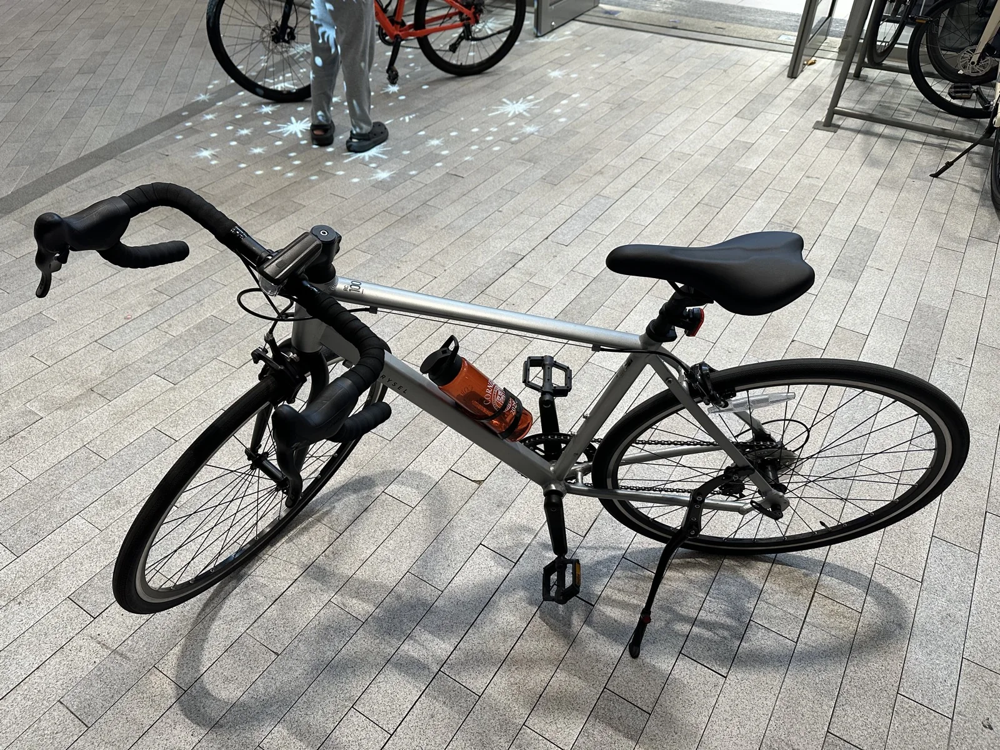
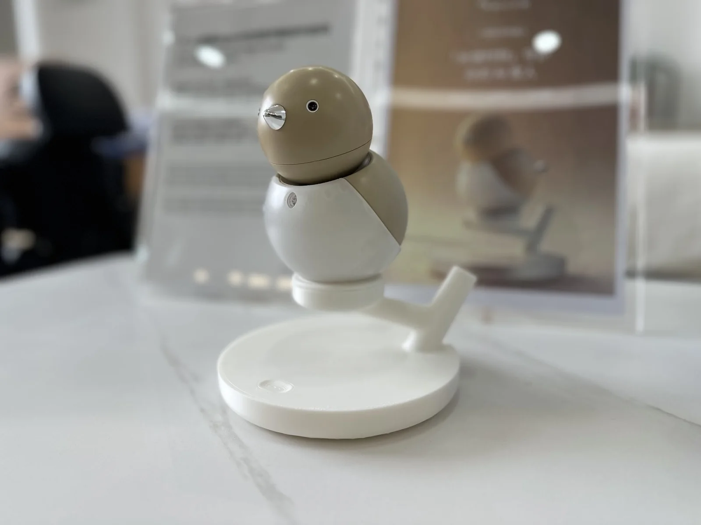
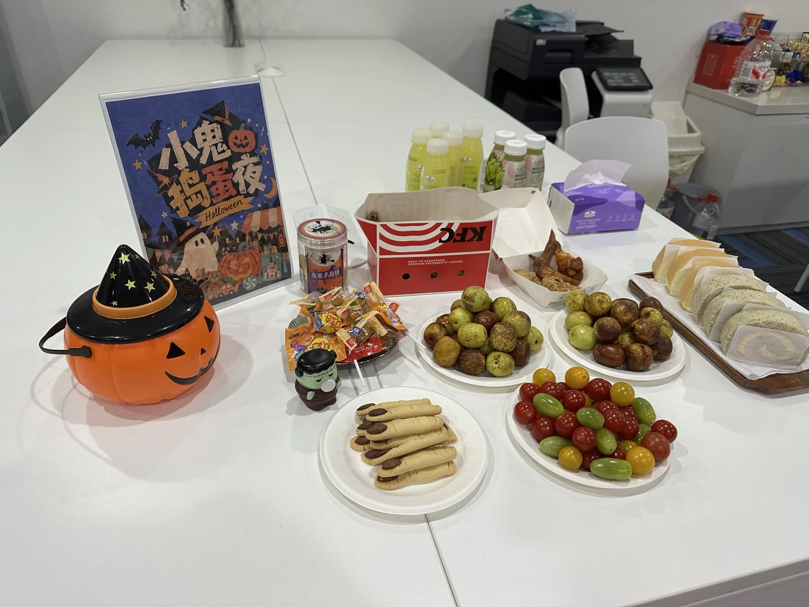
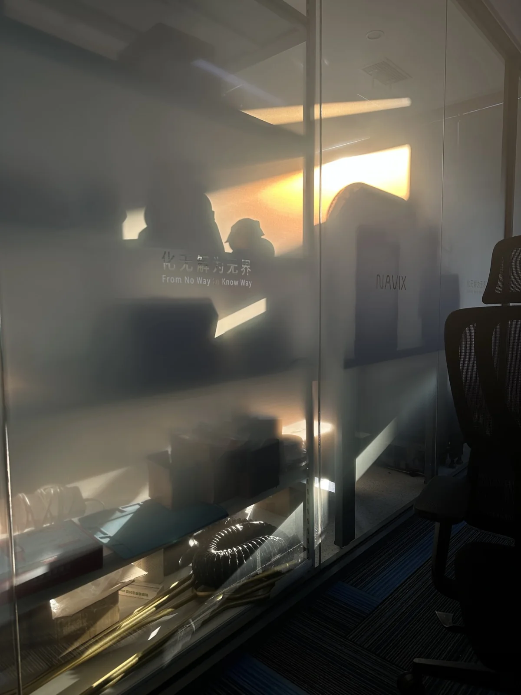

在倒计时归零之前
一段关于选择、创造、信任与告别的实习回忆
各位好。
我想，在离开之前，和大家讲一个故事。
这是一个关于我为什么来到这里，又为什么要离开这里的故事。
故事的开始，要追溯到今年夏天。
一、寻找另一种可能
那时，我还在武汉，在东风汽车的研发部门实习。
我的工作，是将 CARLA 仿真环境接入公司的 VLA 模型，负责其中的调试、测试，以及让整个系统能够顺利运行。
这当然是一份有意义的工作。我知道自己写下的每一段代码、完成的每一项测试，都在为一个更庞大的技术系统贡献一点价值。
但我并不快乐。
在一家庞大的企业里，每个人都被安放在一个精确的位置上。我们负责各自的模块，遵循既定的流程，完成分配的任务，再将成果交给下一个人。
我慢慢感到，自己仿佛成了一台巨大机器里的一颗螺丝钉。
一颗合格的螺丝钉，或许能够让机器运转得更加顺畅。但我想知道，机器究竟要驶向哪里？我们为什么要造这样一台机器？它最终会给这个世界带来什么？
我不满足于只回答“怎样把它做好”。我还想参与决定，“为什么要做它”。
我知道，那不是我想要的全部生活。
于是，我开始寻找另一种可能。
我希望去一家更年轻、更有活力、更富有创造力的公司。我希望那里有一群聪明、热情，甚至有一点不切实际的人。他们不只是想着完成今天的工作，还会认真地讨论，五年以后、十年以后，世界应该变成什么样子。
我想从这些人身上汲取一点燃料。
因为那时的我，仍然不知道自己未来究竟要成为怎样的人。但至少，我希望有一天，能够毫无保留地发挥自己的天赋，去做一些值得骄傲的事情。
带着这样的想法，我找到了真格基金。
我想，既然中国有那么多年轻的创业者，既然有那么多怀抱梦想的人正在创造新事物，那么一家投资过许多优秀创业公司的基金，也许就是我认识他们的一扇窗。
我申请了他们的投资实习生岗位。
遗憾的是，面试之后，HR 告诉我，他们可能更希望找到一位具有金融背景的候选人。
但故事并没有在那里结束。
他们认可我的技术背景，也愿意将我的简历推荐给一些被投企业。
当时的我并不知道，这个小小的决定，会在几天后，把我的生活引向完全不同的方向。
二、落日之后的一通电话
九月初，我刚刚从武汉回到杭州。
新学期开始了。我回学校见了见老师，见了见同学，试着从一个暑假的实习状态里重新调整过来。
按照原本的计划，我很快就要返回武汉，考完已经预约好的驾照考试，然后结束东风的实习。
那本来应该是一段平静而普通的日子。
直到那个傍晚。
我仍然记得，那天是个晴天。
大约下午六点，我骑着自行车，经过学校图书馆外面。
夕阳正在西沉。天空被染成一种浓烈的红色，而太阳刚刚将最后一点光辉收回地平线下。
就在那时，我接到了一通电话。
电话那头是一个陌生的声音。
“你好，我是 Daisy。”
她告诉我，她是一家机器人公司的 HR，从真格基金那里看到了我的简历，想问问我有没有兴趣来他们公司实习。
我答应了。
后来，我经历了几轮面试。
最初和我交流的是 Cooper。我们谈起我过去的技术工作，谈 VLA，谈机器人，也谈我对这个行业未来的理解。
整个交流很顺利。
但我向 Daisy 提出了一个可能有些特别的要求：我希望做产品和市场，而不只是技术研发。
因为在我的内心深处，一直有一种冲动。
我想做一款真正好的产品。
不是为了创造一个新的消费噱头，不是为了满足一种转瞬即逝的欲望，更不是为了制造一件别人也能轻易制造出来的、很快就被遗忘的东西。
我希望它在技术上有自己的独到之处，在设计上有自己的思考，而最重要的是，它应该以人为本。
它应该真正走进人们的生活，理解人们的需要，让那些使用它的人，因为它的存在，而过上稍微好一点的生活。
当我了解到这家公司正在尝试做养老机器人、做情感陪伴产品的时候，我觉得，这或许正是我一直在寻找的机会。
后来，Daisy 告诉我，公司的 CEO 还想和我线下见一面，希望我能来一趟上海。
我看了看自己的日程。
两天以后，我就要坐火车回武汉。我的行李还在那里，驾照考试也已经预约好了。
我想了想，对 Daisy 说：
“要不，明天？”
于是，第二天，我来到了上海。
我至今还记得自己第一次走进虹桥办公楼的样子。
那个时候，我甚至还不知道 CEO 叫什么名字。
Daisy 在楼下接到了我，把我带进办公室，让我先签署一些基本的协议，坐下来等候。
大约二十分钟以后，我被领进了另一间会议室。
后来，我又无数次走进这间会议室。
我们在那里讨论产品，讨论战略，讨论市场，讨论公司的未来。
但那一天，我第一次在那里见到了 Stone。
我们聊了我的经历、我的想法，以及我对未来的期待。
然后，一切都发生得比我想象中快得多。
我收到了入职的邀请。
原本，我还打算先回武汉完成驾照考试，再正式开始上海的工作。但 Daisy 告诉我，另一位新同事即将在十四号入职，问我要不要和他同一天来。
我说，好。
于是，我取消了驾照考试，改变了返程计划，向东风提出离职，收拾好留在武汉的行李，然后来到上海。
就这样，因为一个陌生人在落日之后打来的一通电话，我踏上了一段完全没有预料到的旅程。
三、让一只小鸟破壳
刚来到公司的时候，我其实有些紧张。
这是我第一次进入一家真正的创业公司。我不知道它和我熟悉的学校、实验室、大企业究竟有多大区别，也不知道自己能否适应这样的环境。
所以，起初我做了一个相当谨慎的决定。
我没有在上海租房，而是选择每天从杭州通勤。
每天早上五点四十起床，赶七点零五分的高铁，八点二十左右抵达上海虹桥站，然后再骑二十分钟自行车来到公司。
晚上，再沿着相反的路线回去。
这样的生活持续了半个多月。
有时候我会觉得自己很荒唐。
为了一个尚且不知道能做成什么的项目，我每天花几个小时往返于两座城市。
但也正是在这个过程中，我开始认识这里的人，理解这里的工作，并且一点点融入这家公司。
而如果要说这段实习中最美好的相遇，我首先想到的，是无糖、Ciel 和万青，是我们这个市场团队。
过去在学校和实验室，我身边大多是与我有相似技术背景的人。我们讨论代码、模型和指标，往往不需要解释太多。但来到这里，我开始和一群用不同方式思考问题的人一起工作。我们会从同一只小鸟出发，讨论它能做什么，也讨论用户为什么会需要它；讨论一个功能如何实现，也讨论应该怎样让别人理解它。
我渐渐发现，原来一项技术从实验室走向人们的生活，中间还隔着许多我不曾熟悉的事情。而你们让我有机会学习这些事情，也让我觉得，这里是一个愿意一起把事情做好的团队。
那时，我们正在推进小鸟项目。
我们的目标相当明确，也相当大胆：希望在双十一前后，能够完成第一轮销售。
为此，我们需要在很短的时间内完成一系列工作：线下场馆的布置、官网的搭建、产品营销、达人合作，以及所有与产品发布相关的准备。
但是，在这个过程中，一个问题逐渐显露出来。
我们有一个很好的产品构想。
我们希望这只小鸟能够主动与人交互，能够提醒天气，能够陪伴用户，甚至在未来成为人们健康生活的一部分。
在我们的宣传构想里，它有许多温暖而富有想象力的功能。
然而，那个时候，硬件已经初具形态，软件却还远远没有跟上。
产研的同事们正在忙于其他项目，没有足够的人手把这些功能及时实现出来。
我们可以把一个产品描绘得很好，可以用非常漂亮的语言解释它会怎样改变用户的生活。
可是，如果它最终做不到呢？
如果那些被我们写进文案、画进海报、讲给用户听的功能，最后只停留在想象中呢？
我觉得，总得有人去填补这道鸿沟。
这个人必须理解市场究竟想向用户承诺什么，也必须理解技术上究竟能够实现什么。
而我突然意识到，也许，我可以成为这个人。
于是，我主动提出，希望承担小鸟软件原型的开发。
至少，我想做出一个真正能够运行的 Demo。
我希望无糖、Ciel、万青和整个市场团队在向别人介绍这只小鸟的时候，不必只依靠对未来的想象。
我希望我们能够说：你看，这就是它能够做到的事情。
这就是它能够为一个家庭带来的价值。
这其实也是我第一次尝试承担这样一个角色。
但我很兴奋。
因为我终于有机会，把自己过去学到的技术，和一个真实的产品、真实的用户、真实的需求联系起来。
不再只是让代码库里的一个模块正常运行。
而是让一个原本只存在于想象中的东西，真正来到世界上。
国庆假期结束以后，我做出了另一个决定。
我要在上海租房。
一方面，我已经逐渐信任这家公司和这里的人。
另一方面，我开始真正相信，这只小鸟值得我付出更多努力。
我在公司附近租了一间公寓，买来一辆二手自行车。

从那以后，我终于不必每天清晨五点四十起床，不必在高铁的座位上开始一天的工作。
我可以睡得更久一点，工作得更专注一点，也可以把更多的精力，留给我想要做的事情。
我想把这只小鸟做好。
我希望它不只是市面上又一款情感陪伴机器人，而是一款真正理解人的需要、帮助人们改善健康、建立更好生活习惯的产品。
我希望有一天，它能够走进千家万户。
可惜的是，这只小鸟最终没有破壳。
由于早期设计、硬件成本、开模周期以及一系列现实因素，项目逐渐走到了一个难以继续推进的位置。
我们为它设想过许多功能，为它安排过许多时间节点，也曾经认真地期待过它的诞生。
然而，最终，它没有等到那个属于自己的清晨。

四、一次弃子
在小鸟项目结束之后，公司迎来了一次重大的转型。
Stone 决定，放弃原有的硬件业务，转向医疗 AI，探索患者世界模型。
我想，这对一家公司而言，并不是一个轻松的决定。
它意味着放弃一些已经投入的资源，放弃曾经构想的产品，甚至放弃一部分我们原本相信的未来。
但我理解这个决定背后的逻辑。
在一次茶话会上，Stone 曾经谈到过一个关于泡沫的观点。
在一个快速扩张的行业里，借助资本、市场和技术发展的浪潮，有时候能够让原本极其困难的事情变得相对容易。
而当浪潮退去，当整个行业开始收缩，继续逆着市场的方向前进，可能就需要付出更加昂贵的代价。
我觉得，这是一种现实而清醒的判断。

但对我个人而言，转型也带来了一种复杂的感受。
因为当初吸引我来到这里的，是创造产品的机会。
我希望直接地与人发生联系，去理解他们的生活，设计他们能够触摸、能够使用、能够感受到的东西。
而医疗世界模型，是另一种意义上的创造。
它希望预测患者未来的生理状态，理解疾病的发展，推演不同治疗方案可能带来的结果。
这当然是一件非常有价值的事情。
如果它真的能够成功，也许它会改变医学研究与临床决策的方式，甚至成为某种全新的技术范式。
可是，它距离一个普通人的日常生活，似乎又远了一些。
它更像是一项基础性的技术探索。
我们需要研究算法，组织数据，训练模型，然后在一系列指标上证明自己的能力。
而这种生活，我其实已经经历过。
在我读大二的时候，我就曾经在研究中反复琢磨如何设计更好的算法，如何使用有限的数据，如何让一个模型在某个指标上取得更好的成绩。
我很清楚，那种智力上的较量可以令人兴奋。
但在走出实验室之后，我原本希望寻找的，是另一种形式的创造。
所以，我必须承认，公司的新方向，并不完全是我当初来到这里时所期待的方向。
但这并不意味着我认为这个决定是错的。
相反，我对它产生了另一种好奇。
因为我下国际象棋。
在国际象棋里，有一种非常美丽，也非常残酷的战术，叫作 sacrifice，弃子。
在某些局面下，你必须主动放弃自己最有价值的棋子。
有时候是一匹马，有时候是一座车，甚至可能是棋盘上最强大的皇后。
仅仅看那一步，你似乎遭受了巨大的损失。
但是，真正精彩的弃子，从来不是为了牺牲而牺牲。
它是为了获得更有利的局面，打开原本封闭的进攻路线，赢得时间、空间与主动权。
而最伟大的弃子，甚至能够直接决定整盘棋的胜负。
我想，公司这一次的转型，在某种意义上，也是一场弃子。
我们放弃了自己曾经寄予厚望的硬件产品，放弃了一部分已经拥有的东西，去争取一个尚且不确定、但也许更加广阔的未来。
至于这是一步妙手，还是一次过于冒险的赌博？
我不知道。
可能现在谁也不知道。
但我真的很好奇。
我很想知道，这家公司究竟能把这盘棋下到什么地方。
于是，在转型以后，我仍然尽自己所能，尝试为公司做一些事情。
我去梳理行业的时间线，寻找品牌的历史与科学意象；我试着结合自己过去的物理与技术背景，去思考我们的视觉语言、品牌定位，以及世界模型究竟应该怎样向外界讲述。
我也希望能够参与技术研发，但出于数据保密和工作分工等现实原因，这并不总是可行。
我知道，这样的工作可能并不是我长期希望从事的事情。
但我仍然想留下来。
因为我想亲眼见证，我们做出这样一次重大选择之后，最终究竟能够抵达哪里。
我想看着那张计划表上的倒计时，一天一天减少。
直到它归零。
五、未能走到终点的旅程
然而，故事再次发生了变化。
由于公司的战略与人员安排，我可能无法继续陪伴大家，走到那个倒计时归零的时刻了。
坦率地说，这件事情发生的时候，我是有些失落的。
不仅仅是因为一段实习即将提前结束。
还因为我曾经认真地为它改变过自己的生活。
为了来到这里，我取消了已经预约好的考试，提前结束了上一段实习。
为了能够更好地投入工作，我结束了每天跨城通勤的生活，在上海租下了一间公寓。
当时，我想，我已经和公司签订了到十二月底的实习协议。我也相信，我们有足够的时间去共同完成一些事情。
所以，我签下了三个月的租约。
我把接下来几个月的生活，建立在了这个计划之上。
后来，当我得知自己可能需要在两天之内离开，而且最初也没有相应的补偿安排时，我确实后悔过。
我甚至问自己：为什么当时不一个月一个月地租房？为什么要那么早就对一件尚不确定的事情做出承诺？
I trusted them. And for a moment, I regretted having trusted them so much.
那一刻，我确实感到失望。
但后来，Daisy 帮我协调并解决了租房的问题。对此，我非常感谢她。
这件事情也让我第一次如此真切地意识到，创业的不确定性，究竟意味着什么。
我们常常赞美创业者拥抱风险的勇气。
我们欣赏他们敢于改变方向，敢于推翻过去，敢于将已经拥有的一切作为筹码，再去赌一个更大的未来。
但那些宏大的战略调整，最终总会落在一个个具体的人身上。
它可能是一份突然终止的工作，一间刚刚租下的公寓，一场被取消的考试，或者一段原本已经安排好的生活。
对于公司而言，一次转型可能只是战略上的一次调整。
对于其中的每个人而言，它却可能意味着生活被重新安排。
我想，这也是我在这段实习里学到的一课。
而我仍然认为，这是一段值得的经历。
六、究竟留下了什么
如果有人问我，回过头来看，这段实习究竟给了我什么？
我想，最珍贵的东西，可能并不是某一项具体的技术，也不是简历上又多出的一行经历。
而是我终于体验到了一种曾经渴望已久的工作方式。
我体验过，为了让一件产品真正诞生，而迫切地想把所有技术问题解决掉的冲动。
我体验过，面对市场团队提出的各种大胆设想，不再只是回答“这很难实现”，而是认真地思考“我们怎样才能实现”。
我体验过，把复杂的工程问题解释给不熟悉技术的同事，帮助他们理解一项功能的边界与可能性。
我也体验过，反过来从他们那里学习。
学习用户为什么会被某一个设计打动，为什么同样一项技术，用不同的语言讲述，就可能获得完全不同的理解。
在一所主要由理工科学生组成的学校里，这样的经历对我而言非常难得。
尤其幸运的是，我遇见了无糖、Ciel 和万青。你们让我感到，工作可以不只是不同岗位之间的交接，而是一群人在各自擅长的地方认真付出，又愿意为共同的目标向彼此走近。我很珍惜和你们一起讨论、一起努力的那些日子。即使小鸟最终没能诞生，这个团队也已经成为我这段经历里最美好的一部分。
我也第一次如此近距离地看到，一家创业公司是怎样运转的。
我看到大家如何在有限的时间和资源里做出决定，如何在一次次会议里协调彼此的想法，如何兴奋地制定一个计划，又如何在现实面前不得不推翻它。
与我过去所熟悉的庞大组织相比，这里的每个人之间都更加紧密。
你可以直接向 CEO 表达自己的想法，可以和不同背景的同事讨论一个产品，也可以突然发现，原本没有人负责的那项工作，自己就能够站出来承担。
我曾经想逃离的，是那种只能在巨大系统里充当一颗螺丝钉的感觉。
而在这里，我至少有过那么一些时刻，真正感到自己不只是在完成任务。
我是在参与创造。
这就已经足够珍贵了。
所以，如果再给我一次机会，让我回到九月初那个晴朗的傍晚，回到学校图书馆外面，回到夕阳将最后一点光辉收回地平线的时刻——
当电话再次响起，当 Daisy 再次问我是否有兴趣加入这家公司时——
我想，我仍然会接起那通电话。
我仍然会说：
“好啊，我们聊一聊。”
即使我已经知道，这只小鸟最终不会破壳。
即使我已经知道，那间上海的公寓，我可能只会住上短短一段时间。
即使我已经知道，自己最终无法陪伴这家公司走到原本约定的终点。
因为这段经历让我知道，我真正喜欢的工作是什么样子。
它让我更加确信，自己未来想要创造的，究竟是什么。
七、在倒计时归零之前
至于 Navix 的未来，我想，现在没有人能够给出一个确定的答案。
我们正在探索的患者世界模型，究竟会取得怎样的成果？
它能否真正预测疾病的发展，能否创造一种新的医疗技术范式，能否最终找到愿意为它付费的客户？
这些问题，都还没有答案。
而且我知道，摆在大家面前的道路并不容易。
这是一家刚刚从养老机器人转型而来的年轻公司。
它要进入的，却是一个拥有巨大市场、复杂行业壁垒，以及无数强大竞争者的领域。
我们面对的，可能是拥有庞大现金储备、海量算力、丰富数据和世界顶尖研究人员的科技巨头。
他们也在注视着医疗 AI，也在探索健康领域的未来。
而我们必须尝试用有限的资源，在他们的注视下找到自己的位置。
甚至，从他们手中夺下一块属于自己的市场。
这会是一件非常艰难的事情。
也正因如此，它才值得期待。
我不知道，未来某一天，大家是否真的能够证明，当初放弃硬件、转向医疗 AI，是一场精妙的弃子。
我也不知道，当那个倒计时最终归零的时候，大家究竟会收获一场胜利，还是不得不重新摆开棋盘。
但我希望，那会是一个值得庆祝的时刻。
我希望你们能够创造一些真正伟大的东西。
不仅仅是一个漂亮的模型，不仅仅是一份出色的融资计划，也不仅仅是一套能够打动投资人的故事。
而是某种真正能够改变人们生活、能够在多年以后依然留下价值的东西。
至于我自己，正如大家可能已经知道的，我还没有本科毕业。
我正在申请研究生项目，也仍然在寻找未来的方向。
在过去的某个时刻，我确实想过，也许 Navix 会成为我未来的一种可能。
但至少现在看来，我们可能需要先在这里告别了。
人生很有意思的一点是，你往往只有在回头看的时候，才会发现那些曾经毫不起眼的瞬间，究竟改变了你多少。
九月初的那个傍晚，我不知道一通陌生电话会让我来到上海。
国庆之后，我不知道自己租下的公寓，会见证一只小鸟从希望走向终止。
而今天，我也不知道，下一次与大家相遇，会是在怎样的地方，以怎样的身份。
也许几年之后，我们会在某个行业会议上再次见面。
也许我会在新闻里看到 Navix 的名字。
也许有一天，我会看到你们真正做出了一个让世界惊讶的产品。
到那时，我想，我会很高兴地说：
我曾经在那里工作过。
我曾经认识过这群人。
我曾经短暂地参与过他们的故事。
我们没有一起走到倒计时归零的那一天。
但能够参与这段旅程，本身就已经是我人生中一份珍贵的礼物。
最后，我想感谢在这里认识的每一个人。
首先，感谢无糖、Ciel 和万青。谢谢你们让我遇见这样一个好的团队，让我在这里不仅学到了新的工作方式，也拥有了真正值得珍惜的相遇。
也感谢 Daisy，感谢 Cooper，感谢 Stone，以及这段时间一起共事、一起讨论、一起努力的所有同事。
谢谢你们让我看到了另一种工作的方式，另一种创造的可能。
我祝愿大家，在这盘尚未结束的棋局里，找到属于自己的妙手。
也祝愿大家，在未来的日子里，都能拥有足够的勇气，去创造自己真正相信的东西。
愿我们都有一个值得期待的未来。
谢谢大家。
